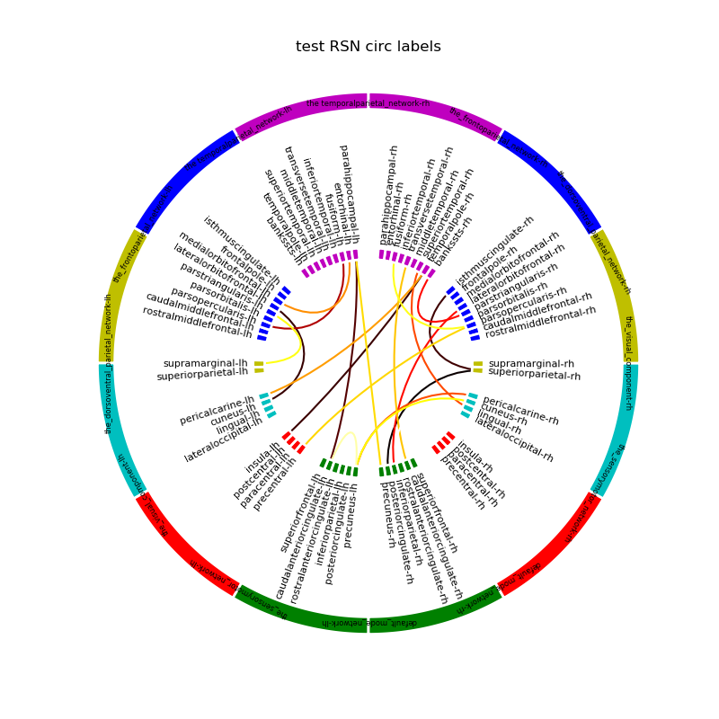

Note
Click here to download the full example code
Example exposing the plot_labelled_group_connectivity_circle function.¶
# Author: Praveen Sripad <pravsripad@gmail.com>
import numpy as np
from jumeg.connectivity import plot_labelled_group_connectivity_circle
from jumeg import get_jumeg_path
import yaml
# load the yaml grouping of Freesurfer labels
yaml_fname = get_jumeg_path() + '/data/rsn_desikan_aparc_cortex_grouping.yaml'
label_names_yaml_fname = get_jumeg_path() + '/data/desikan_label_names.yaml'
with open(label_names_yaml_fname, 'r') as f:
label_names = yaml.safe_load(f)['label_names']
# make a random matrix with 68 nodes
# use simple seed for reproducibility
np.random.seed(42)
con = np.random.random((68, 68))
con[con < 0.5] = 0.
# plotting within a subplot
plot_labelled_group_connectivity_circle(yaml_fname, con, label_names,
out_fname='rsn_circle.png',
show=False, n_lines=20, fontsize_names=6,
title='test RSN circ labels')
Total running time of the script: ( 0 minutes 1.461 seconds)